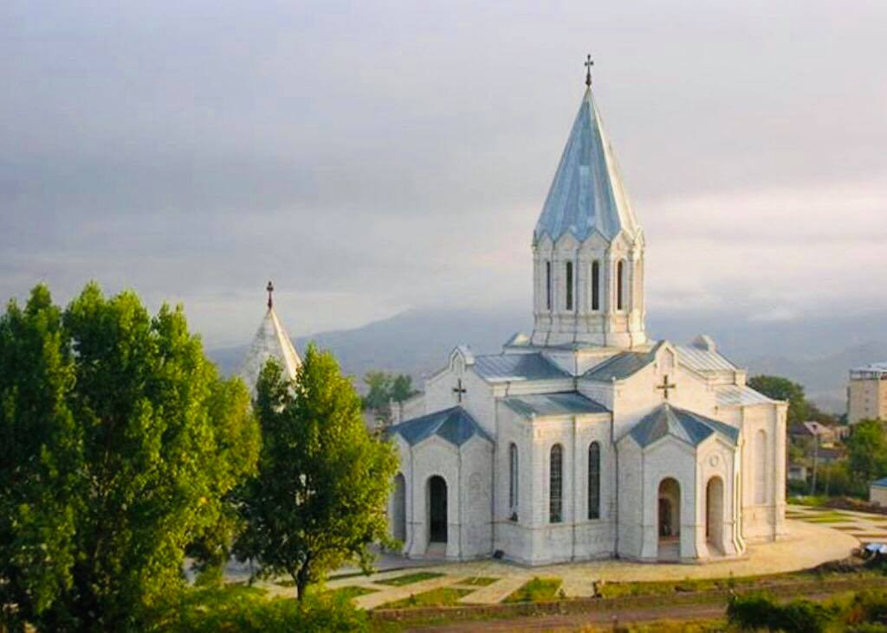

Շուշի քաղաքը Արցախի Հանրապետության Շուշիի շրջանում, որի վարչական կենտրոնն է։ 1920 թվականին թուրքերի կողմից ավերվել է և հայաթափվել: Արցախյան պատերազմի ժամանակ՝ 1992 թվականի մայիսի 9-ին հայկական զինված ուժերի կողմից ազատագրվել է նորաստեղծ ադրբեջանի հանրապետության զինված ուժերի ստորաբաժանումներից։ 2020 թվականի Արցախյան երկրորդ պատերազմին կրկին հայաթափվել է և նոյեմբերի 7-ից 9-ը գրավվել ադրբեջանի հանրապետության զինված ուժերի ստորաբաժանումների կողմից: Շուշին ընկած է Իրանական բարձրավանդակը Հարավային Կովկասին, Հայաստանի երկու կարևոր երկրամասերը՝ Զանգեզուրն ու Արցախը միացնող ճանապարհներիկետում: Շուշին գտնվում է միջին լեռնային, անտառային գոտում և ունի չափավոր խոնավ և համեմատաբար մեղմ կլիմա: 8-րդ դարից սկսած մինչև 1920 թ․ Շուշիի բնակչությունը կազմում էին հիմնականում հայեր, շիա դավանանքի պարսիկներ, սուննու դավանանքի թուրքեր, ինչպես նաև ազգային փոքրամասնություն կազմող հրեաներ, հույներ, վրացիներ, լեզգիներ, ռուսներ և այլն։ Այստեղ բնակություն են հաստատել Ագուլիսից, Նախիջևանից, Շահկերտից, Մեղրիից, Շոշ գյուղից և Արցախի այլ բնակավայրերից եկած հայեր, մեծ մասամբ արհեստավորներ ու առևտրականներ Հայերն ապրել են քաղաքի վերին մասում, նրանց թաղերն ու եկեղեցիները կոչվում էին իրենց նախկին բնակավայրերի անուններով։ Մինչև 2020թ Նոյեմբերի 9-ը՝ Ղազանչեցոց սբ. Ամենափրկիչ Եկեղեցու Պահապան Հրեշտակն էր պատկերված Շուշի քաղաքի նոր զինանշանի վրա։ Մինչև 2020 թ. Սեպտեմբերի 27-ի 44-օրյա տևող պատերազմը՝ Շուշիում բնակվում էր 4.100 հայ, որոնց մի զգալի մասը փախստականներ են Սումգայիթ և Բաքու քաղաքներից: Քաղաքը պատերազմից զգալիորեն վնասվել էր։ 2007 թ. հունիսի 11-ին ստեղծվել էր քաղաքի նոր հատակագիծը։ Նախատեսվում էր Շուշին մինչև 2020 թ. վերականգնել որպես Արցախի մշակութային կենտրոն Շուշին բաց թանգարան էր երկնքի տակ։
Սուրբ Ամենափրկիչ Ղազանչեցոց եկեղեցին գտնվում` էր մինչև 2020թ-ը նոյեմբերի 9-ը, հայկական առաքելական եկեղեցի Արցախի Հանրապետության Շուշիի շրջանի Շուշի քաղաքում։ Հայ առաքելական եկեղեցու Արցախի թեմի կենտրոնն էր։ Ընդգրկված էր Շուշիի քաղաքի պատմության և մշակույթի անշարժ հուշարձանների ցանկում և հանդիսանում էր Արցախի խորհրդանիշներից մեկը։ Կառուցվել է 1868-1887 թվականներին Մինչ նոր եկեղեցին կառուցելը ճարտարապետները կանգնել են մի մեծ խնդրի առջև՝ բանն այն էր, որ ամեն պատարագից առաջ հարկավոր էր, որ պատարագիչ քահանան մեղքերի թողություն խնդրեր մեկ այլ քահանայից, և լսեր այս խոսքերը. «Թող քո ականջները լսեն, թե ինչ են բարբառում քո շուրթերը», սակայն եկեղեցին ուներ միայն մեկ քահանա, այդ իսկ պատճառով ճարտարապետներ որոշեցին կառուցել մի ընդհատակյա սենյակ, որտեղ տեղի կունենար հրաշքը՝ քահանան թողություն էր խնդրում լսելով իր սեփական ձայնը՝ ասելով. «Թող իմ ականջները լսեն, թե ինչ են բարբառում իմ շուրթերը»։ Այս երևույթը միակն է աշխարհում և այն մինչև հիմա էլ գործում է Շուշիի Ս. Ամենափրկիչ Ղազանչեցոց եկեղեցում։ Շուշիի ջարդերից հետո՝ 1920 թվականին, եկեղեցին փակվեց։ Քաղաքում բնակվող ադրբեջանցիների կողմից այն սկսեց օգտագործվել որպես պահեստ, իսկ հետագայում՝ որպես ավտոտնակ։ Այդ ժամանակահատվածում քանդվեցին եկեղեցու մուտքի մոտ դրված հրեշտակների արձանները, ավերվեց գմբեթը։ Արցախյան պատերազմի ընթացքում եկեղեցին հակամարտող կողմերի համար կարևոր նշանակություն ուներ։ Հայկական կողմի համար այն հանդիսանում էր խորհրդանիշ, իսկ ադրբեջանական զինված ուժերի համար՝ Գրադ հրթիռային համալիրների հրթիռների պահեստ։ Շուշիի ազատագրման ռազմական գործողությունից հետո այնտեղ այցելեցին Արցախի ռազմաքաղաքական և հոգևոր ղեկավարությունը։ Ավերված գմբեթը վերականգնվեց 1998 թվականին։ Արցախյան երկրորդ պատերազմի ժամանակ՝ 2020 թվականի հոկտեմբերի 8-ին, Ադրբեջանի ռազմաօդային ուժերի կողմից հրթիռակոծվել է, վնասվել է եկեղեցու գմբեթը Եկեղեցական համալիրը գտնվում է Շուշիի կենտրոնական մասում և իր արտաքին տեսքով նման է Էջմիածնի Մայր Տաճարին[1]։ Կազմված է եկեղեցուց և զանգակատնից։ Հիմնականում կառուցվածքով նման է բազիլիկ եկեղեցու, չունի գմբեթ Եկեղեցին 34․7 մետր երկարությամբ, 23 մետր լայնությամբ և 35 մետր բարձրությամբ ուղղանկյուն հատակագծով, խաչաձև գմբեթավոր հորինվածքով կառույց է։ Չորս ճակատներից դուրս է գալիս աբսիդներ։ Ունի 3 մուտք՝ արևմուտքից, հյուսիսից և հարավից, որոնք ունեն միանման ճարտարապետական հորինվածք և որոնց առջև կառուցված է երեքական դռներով բոլորաշեն նախամուտքեր։ Նախամուտքերի վերնամասում բացված են փոքրիկ խաչաձև լուսամուտներ։ Եկեղեցին հարուստ է զարդաքանդակներով՝ դռներին, լուսամուտների կամարների վրա և այլուր։ Լուսամուտներն ունեն 1 մետր լայնություն, 5 մետր բարձրություն։ Պատերին առկա են հայատառ բազմաթիվ արձանագրություններ Անշարժ զանգվածի մեջ արված խորշերը ծառայում են երկրաշարժի ժամանակ որպես մեղմիչ Զանգակատունը գտնվում է եկեղեցուց մի քանի մետր արևմուտք։ Այն երեքհարկանի շինություն է։ Մուտքի մոտ գտնվում են փողեր բռնած հրեշտակների արձաններ, որոնցից մեկը պատկերված է Շուշի քաղաքի զինանշանի վրա։ Իսկ Այժմ 2020 թվականի Արցախյան երկրորդ պատերազմից հետո, նոյեմբերի 7-ից 9-ը ընկած ժամանակակահատվածում ադրբեջանի հանրապետության զինված ուժերի ստորաբաժանումների կողմից գրավեցին, գտնվում է ադրբեջանի հանրապետության կազմում:
